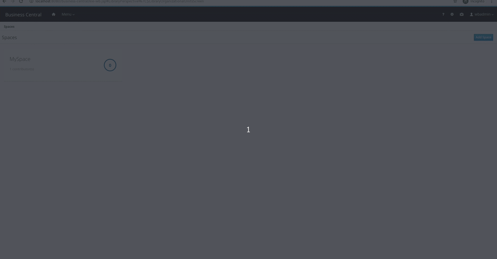

What Foundation Team created for Business Central — June 2020
Recently, we pushed new features on Business Central added by Foundation Team. Those features are available soon at 7.39 release. This post will do a quick overview of those. I hope you guys enjoy it!

Improvements on Business-Central REST API adding the groups/roles operations available in the UI
We included in our REST API most of the groups and roles operations available in the Business Central UI, including:
Groups
- New group;
- Delete group;
- List groups;
- Update group permissions;
Roles
- List roles;
- Update roles permissions
See more details on the full blog post.
Decoupling BC File System from JGIT
In the last few months, in order to remove explicit jGit dependencies in Business Central code, we refactored Business Central File allowing users to implement new file system providers.
It is true that we still depend on jGit on many Business Central features (like Collaboration), but this change allowed us to use Kubernetes ConfigMaps to store basic information just using our Java Nio2 library.
This enables Business Central Monitoring to use Kubernetes based cloud providers as a file system, storing all Monitoring information in ConfigMaps without relying on persistent volumes.
Description when creating new Space using Business Central
Now, when you create a new space in Business Central Central via UI or REST API, it’s possible to define not only Space name but also its description.

Other bug fixes and improvements:
We also fixed several bugs and did some performance improvements on Business central:
- AF-2434 Prevent system repositories from receiving the default post-commit hook
- RHPAM-2718 Dropdown with branches is missing in the branch management
- RHPAM-2748 Update locale selection drop-down to include only the supported languages for RHDM and RHPAM
- RHPAM-2708 RHPAM 7.x Business Central latency correlated with the number of groups memberships
- AF-2446 Dashbuilder Map Displayer support latitude, longitude
- AF-2514 Execution Server UI breaks if connected to a KIE Server that has a Container deployed that its jar is not on BC internal Maven repo
- RHPAM-2674 Exception thrown when a test scenario containing a tag is renamed without saving
- AF-2432 Restoring an old asset version doesn’t work outside the master branch
Thank you to everyone involved!
I would like to thank everyone involved with this release, from the awesome Foundation Team Engineers to the lifesavers QEs and all the UX people that help us make our work look awesome!